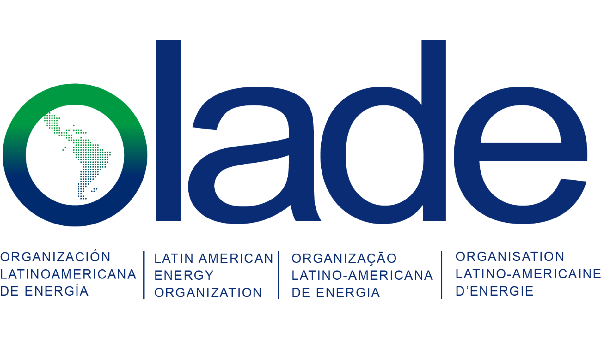

Semana de la Energía Chile 2025
Los 100 datos mas relevantes de la región
Por categorías
Por autor
1. Categoría (Filtro I)
2. Subcategoría (Filtro II)
3. Detalle (Filtro III)
Reiniciar filtros
Autores
Error de JavaScript